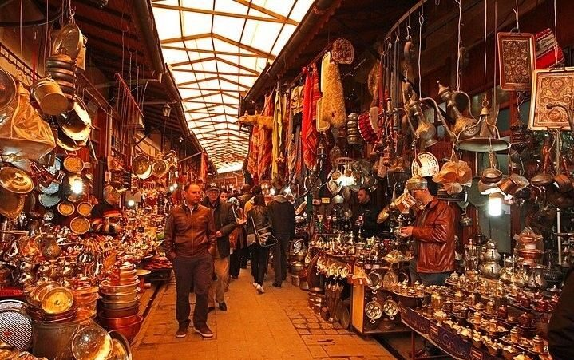

GAZİANTEP
Gaziantep, hem tarih ve kültür hem de gastronomi meraklılarına unutulmaz bir gezi sunuyor.
Bu kadim şehir, binlerce yılda şekillenmiş büyüleyici yöresel mutfağı, asırlık çarşıları, hanları, tarihi camileri, hamamları ile kültür gezilerinin değişmez adreslerinden biridir.
Hem tarih, kültür ve mimari meraklıları için hem de yeni lezzetler tatmak isteyenler için adeta bir cennet olan Gaziantep’te benzersiz bir tatil geçirmeniz için tüm detayları sizin için derledik.
Gaziantep'in Genel Özellikleri
Güneydoğu Anadolu Bölgesinin en eski kültür merkezlerinden birisi olan Gaziantep, MÖ 4000 yıllarına kadar uzanan ve ilk uygarlıkların doğduğu, Mezopotamya ve Akdeniz arasında, tarihi İpek Yolu üzerinde konumlanmıştır.
Gaziantep’te Paleotik, Neolotik, Kalkeotik, Tunç Çağlarına, Hitit, Med Asur Pers İskender Selefkosler Roma, Bizans, Abbasiler ve Selçuklulara ait eserler bulunmaktadır. Hitit döneminden itibaren Gaziantep önemli bir dini merkez olmuştur.
Hitit baş tanrısı Teşup’un kutsal şehri olarak bilinen Dolichenos (Gaziantep) aynı özelliğini Grek, Roma döneminde de korumuştur.
Gaziantep kültürel zenginliği kadar doğal güzellikleri, coğrafyası, zengin mutfağı ile tam bir turizm cennetidir.
Gaziantep'in İklimi
Gaziantep, Akdeniz ve kara ikliminin geçiş noktasında yer almaktadır. İlin güney kesimleri Akdeniz ikliminin etkisinde olmakla beraber, genel olarak yazlar sıcak ve kurak, kışlar ise soğuk ve yağışlıdır.
İlde yağış en çok kış ve ilkbahar aylarında görülür.
Yarısından fazlası ziraata elverişli olan il toprakları zeytin, fıstık, meyve ve sebze bahçeleri üzüm bağları pamuk ve buğday tarlaları ile kaplıdır.
İlin dağlık kesimlerinde kısmen çam, köknar, sedir ormanları, step ve yarı step bitki örtüsü bulunur.
Nüfusu
Gaziantep nüfusu TÜİK tarafından 2.154.051 olarak açıklanmıştır. Açıklanan bu nüfusun erkek nüfusu 1.087.763 ve kadın nüfusu 1.066.288 olmuştur. Gaziantep ilinin nüfusu en büyük ilçesi Şahinbey (941.055), nüfusu en küçük ilçesi Karkamış (9.379) olmuştur.
Gaziantep’te Gezilecek Yerler
- Gaziantep Kalesi
Sadece Gaziantep'in değil, Türkiye'nin de en önemli tarihi yapılarından biri olan ve şehrin simgesi haline gelen Gaziantep Kalesi, bölgeye hakim yüksek bir tepede inşa edilmiş büyüleyici bir yapı.
Ülkemizin günümüze kadar tamamen sağlam kalmayı başarmış ender kalelerinden biri olan ve yaklaşık 6000 yıl önce Roma döneminde gözetleme kulesi olarak inşa edilen Gaziantep Kalesi, büyüleyici kaleler yapması ile ünlü Bizans İmparatoru Justinianus döneminde günümüzdeki halini aldı.
Osmanlı kaynaklarında 36 kulesi olduğundan bahsedilen kalenin günümüzde 12 tane kulesi bulunuyor ve bu kuleler sundukları büyüleyici Gaziantep manzarasından dolayı günün her saati turistlerle dolu.
Gaziantep Kalesi'nin sularından ise özellikle geceleri Gaziantep’in en etkileyici manzaralarının fotoğraflarını çekebilirsiniz.
- Zeugma Mozaik Müzesi
Türkiye'nin ve dünyaca ünlü müzelerinden biri de Gaziantep'te yer alıyor. Dünyanın ikinci büyük mozaik müzesi olan ve 2011 yılında ziyarete açılan Zeugma Mozaik Müzesi, her yıl tüm dünyadan yüz binlerce tarih, kültür ve arkeoloji meraklısını kendine çeken zengin koleksiyonlara sahip.
Geç Antik, Süryani ve Hristiyan dönemi dini motifleri ile süslü binlerce büyüleyici mozaik eseri yakından görebileceğiniz müzede özellikle Zeugma Antik Kenti’nden çıkarılan ve 2500 m² gibi devasa bir alanı kapsayan Roma dönemi mozaikleri, heykelleri, sütunları ve çeşmeleri çok ilgi çekiyor.
140 m² duvar resimleri, tunçtan yapılan Mars heykeli, savaş tanrısı Ares'in bronz heykeli ve gördüğümüzde hemen hatırlayacağınız Zeugma’nın Mona Lisa’sı olarak bilinen çingene kızı mozaiği ise müzenin kesinlikle yakından görmeniz gereken eserleri arasında bulunuyor.
Gaziantep merkezinde Mithatpaşa Mahallesi, Hacı Sani Konukoğlu Bulvarı üzerinde yer alan Zeugma Mozaik Müzesi'ni hafta içi her gün yaz döneminde 08:30 ile 19:00, kış döneminde ise 08:30 ile 18:30 saatleri arasında ziyaret edebilirsiniz.
- Rumkale
Gaziantep'te başka hiçbir yerde göremeyeceğiniz büyüleyici bir manzara izlemek için Fırat Nehri ile Merzimen Çayı’nın birleştiği konumda bir yarımada üzerinde yer alan Rumkale’ye uğramalısınız.
Antik çağlardan beri pek çok medeniyet tarafından kullanılan ve Roma ile Orta Çağ mimari özelliklerini yansıtan Rumkale, sarp kayalar üstündeki büyüleyici manzarasıyla tüm dünyadan fotoğrafçıların da sıkça ziyaret ettiği yerlerden biridir.
Hendek bağlantısı kesildiği için kalenin karşısında her zaman bulabileceğiniz küçük gezi tekneler ile ulaşabileceğiniz Rumkale’nin bulunduğu alandan Fırat Nehri ve Merzimen Çayı’nın büyüleyici panoramik manzaralarını şahit olabilir,
Yontma Taş Devri’nden beri kullanıldığı düşünülen kale çevresindeki mağaralar ve yerleşim alanlarını rehberde turlarla gezerek ilginç bilgiler alabilirsiniz.
- Gaziantep Bakırcılar Çarşısı
Hem Gaziantep şehrinin tarihi atmosferi yaşamak hem de keyifli bir tatil alışverişi yapmak için ilk uğramanız gereken yerlerden biri olan Gaziantep Bakırcılar Çarşısı, Saray Caddesi üzerinde güzel bir konumda yer alıyor.

500 yılı aşkın uzun bir tarihe sahip ve günümüzde de eski dönemlerde olduğu gibi şehrin ticaret kalbinin attığı yerlerden olan Bakırcılar Çarşısı, Gaziantep'te yüzlerce yıldır yapılan bakır işçiliğini yansıtan yüzlerce
çeşit el yapımı bakır ürünü, yöresel yiyecekler, baharatlar, organik ürünler, kurutulmuş gıdalar ve hediyelik süs eşyaları ile her zaman çok hareketli.
Hem toplu taşıma araçlarıyla hem de kısa bir yürüyüşle kolayca ulaşabileceğiniz çarşıda bakır ve pirinçten yapılmış heykellerden ibrikler, çay ve kahve takımları, tepsiler, sedef kakma sandıklar, el yapımı sehpalar ve büyüleyici aynalara kadar pek çok ürün satın alabilirsiniz.
- Gaziantep Hamam Müzesi
Gaziantep Hamam Müzesi, geleneksel Osmanlı hamam mimarisi ve kültürünü görebileceğiniz en güzel yerlerdendir.
1577 yılında Lala Mustafa Paşa tarafından yaptırılan devasa külliyenin hamam bölümünde ziyarete açılan Hamam Müzesi, Gaziantep kültüründe de önemli bir yer tutan Türk hamamlarının pek çok dönemdeki örneklerini yakından görmenizi sağlıyor.
ÖNERİMİZ:
Her gün saat 08.30 ile 17.30 saatleri arasında ziyarete açıktır.
- Bey Mahallesi ve Tarihi Gaziantep Evleri
Gaziantep şehrinin en eski yerleşim bölgesi olan Bey Mahallesi, yüzlerce yıllık tarihi yapılarıyla kültür gezilerinin yanı sıra fotoğraf turlarının da değişmez adreslerinden biri.
Mustafa Kemal Atatürk'ün resmi nüfus kaydının bulunduğu Bey Mahallesi, tarihleri 1500'lü yıllara kadar uzanan etkileyici taş evler, konaklar, camiler, hamamlar ve dar sokaklarıyla size unutulmaz bir gezi deneyimi sunuyor.
Günümüzde mahallenin bazı taş konakları, otantik dokularını koruyarak müze, butik otel, kafe ve restoran olarak hizmet veriyor.
Ülkemizin tarihi dokusu bozulmamış ender mahallelerden biri olarak kesinlikle ziyaret etmenizi önerdiğimiz Bey Mahallesi'nde Gaziantep'in geleneksel mimarisini yansıtan 2 ile 3 katlı konakların fotoğraflarını çekebilir,
Etnografya Müzesi ve Hamam Müzesi gibi şehrin önemli müzelerini ziyaret edebilir veya yüzlerce yıllık bir restoranda mola vererek Gaziantep'in dünyaca ünlü lezzetlerini tadarak yorgunluk atabilirsiniz.
- Yesemek Açık Hava Müzesi
Gaziantep'in İslahiye ilçesine bağlı Yesemek Mahallesi'nde yer alan ve Hitit döneminden beri aktif olarak kullanılan heykel yapım atölyeleri ile ünlü olan Yesemek Açık Hava Müzesi, tüm dünyadan kültür ve arkeoloji meraklarını kendine çeken etkileyici bir gezi alanı.
2012 yılında UNESCO Dünya Mirası Geçici Listesi’ne eklenen ve şehrin en çok ziyaret edilen yerlerinden olan Yesemek Açık Hava Müzesi’nde antik dönem dağ tanrılarının heykelleri, pek çok farklı döneme ait aslan kafaları, Hitit simgeleri ve Asur dönemine ait büyüleyici heykelleri arasında keyifli bir gezi yaparak benzersiz fotoğraflar çekebilirsiniz.
Bölgeye hakim bir tepede yer alan antik kente de uğrayabileceğiniz gezinizde bu tepeden açık hava müzesinin heykellerinin panoramik fotoğraflarını çekebilirsiniz.
Gaziantep’te Ne Yemelisiniz?
UNESCO tarafından gastronomi dalında korumaya alınmış olması sebebiyle dikkat çeken Gaziantep mutfağı, oldukça önemli zenginliklere sahip. Bugüne dek birçok farklı medeniyete ev sahipliği yapmış bir şehir olması sebebiyle mutfağında da çok kültürlülük görülüyor.
Gastronomik bir seyahat yapmak isteyen pek çok kişinin tercihi olmayı başaran Gaziantep, farklı damak tatlarına hitap etmeyi başarabilen lezzetlere sahip. Bu lezzetlerin birkaçını sizin için aşağıda sıraladık.
- Ali Nazik Kebabı
Gaziantep denildiğinde akla gelen ilk şey kebap oluyor! Unutulmaz kebapları ile dikkat çeken bir mutfağa sahip olan Gaziantep’te mutlaka denemeniz gereken lezzetlerin arasındaysa Ali Nazik Kebabı bulunuyor.
Bu lezzeti Türk mutfağının pek çok köşesinde görebilirsiniz. Ancak farklı bir yerde denediyseniz ve sevdiyseniz Gaziantep usulü Ali Nazik Kebabını mutlaka denemenizi öneriliyor. Közlenmiş patlıcan, sarımsaklı yoğurt veya kuşbaşı et ile hazırlanan Ali Nazik Kebabı restoranlarda genellikle pilav ve mezeleri de servis ediliyor.
- Yuvalama
Eğer Gaziantep seyahatinizi kış aylarında yapmayı düşünüyorsanız mutlaka denemeniz gereken lezzetler listesinin başında yuvalama gelmeli.
Klasik çorba tariflerinden sıkılanlar için en leziz alternatiflerden biri olan yuvalama hem sağlıklı hem de enerji dolu hissetmenize imkan sağlayacak bir lezzet!
- Nohut Dürümü
Gaziantep mutfağı denildiğinde pek çok kişinin aklına özellikle kebap gibi ağır ve et yemekleri geliyor olsa da yalnızca bu alanda üretim yapıldığını söylemek doğru değil.
Bu yemeklerden biri de nohut dürümü.
Nohut dürümünü Gaziantep usulü yapıldığı takdirde oldukça lezzetli bir hal alıyor. İsminden de anlaşılacağı üzere içerisinde nohut bulunan fakat patates kızartması, salata ve sos ile daha lezzetli hale getirilen bu nohut dürümü, besleyici olmasının yanında lezzetli yapısıyla da deneyimlemeniz gereken özel lezzetlerden birisi olarak öne çıkıyor.
- İçli Köfte
Türk mutfağının en sevilen lezzetlerinden biri olan içli köfte yalnızca yurt içi değil yurt dışında da oldukça büyük bir popülerliğe sahip. Eğer içli köftenin ilk olarak nerede hazırlandığını öğrenmek istiyorsanız karşınıza çıkacak cevap ise Gaziantep oluyor! Antep usulü içli köfte deneyenleri adeta büyüleyen ve uzun süre boyunca unutulmayacak eşsiz lezzetlere sahip olan bir yemek olarak biliniyor.
- Firik Pilavı
Firik pilavı bölgede yer alan restoranların neredeyse tamamında en sevilen seçeneklerden biri olmayı başarıyor. Oldukça yoğun bir ilgi gören bu lezzet genellikle et yemeklerinin yanında alternatif olarak tercih edilse de tek başına tüketildiğinde bile oldukça doyurucu olması sebebiyle dikkat çekiyor.
- Şöbiyet
İncecik bir yufka ile hazırlanan şöbiyet, Gaziantep tatlı listesinin başında gelmeyi başaracak kadar keyifli bir lezzet. Gaziantep’e ait özel bir lezzet olan şöbiyet, içerisinde bol bol iri fıstık ve kaymak bulunduruyor. Yöre halkı tarafından yoğun ilgi gören bu lezzetin yöreye ziyarette bulunanlar tarafından da unutulmaz bir lezzet haline geldiğini söylemek gerekiyor.
- Katmer
Gaziantep mutfağının en önemli lezzetlerinden biri kesinlikle Antep fıstığı. Bu lezzeti özellikle tatlıların hemen hepsinde görmek mümkün. İncecik açılmış yufka, fıstık ve kaymak ile oluşan ve dolayısıyla oldukça basit bir hammaddeye sahip olan katmer lezzetiyle deneyenleri adeta büyülüyor. Oldukça benzersiz bir lezzete sahip olan katmerin yoğun bir tatlı olduğunu, dolayısı ile hafif akşam yemekleri üzerine daha iyi bir seçenek olacağını ise söylemek gerekiyor.
Yanında süt ile servis edilen katmer, bu sayede daha kolay şekilde tüketiliyor ve daha hafif bir lezzet haline geliyor! Gaziantep seyahatiniz esnasında mutlaka denemeniz gereken bu lezzeti sevdiklerinizle paylaşmak istiyorsanız paketli halde satılan versiyonlarını satın alabilirsiniz. Ancak yerinde yemenin çok daha farklı olduğunu söylemekte fayda var.